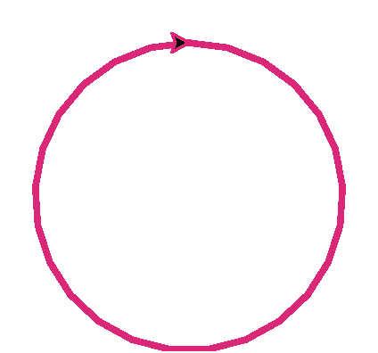

Глава 7 · Глубокое погружение в Turtle
Геометрия окружности
circle() — не магия: у неё есть точная геометрия, которую полезно понимать, а не просто запомнить как заклинание.
circle() выглядит как одна простая команда, но за ней стоит
настоящая геометрия — разберём её по-настоящему, а не как «магическую» функцию.
Где на самом деле центр
Официальное поведение circle(radius): центр окружности
находится на расстоянии radius слева от
черепашки (относительно направления её курса) — не в текущей позиции черепашки, как можно
было бы подумать:
Один конец дуги — там, где стоит черепашка
Если нарисовать не полную окружность, а дугу (
extent меньше 360°) — одним из концов дуги всегда будет текущая позиция черепашки. Это удобно: не нужно заранее вычислять, откуда начнётся дуга.Положительный и отрицательный радиус
Положительный радиус рисует окружность против часовой стрелки; отрицательный — по часовой, с тем же радиусом по модулю:
krug_polozhitelnyj.py
import turtle
screen = turtle.Screen()
screen.setup(width=340, height=320)
artist = turtle.Turtle()
artist.pensize(3)
artist.pencolor("#5B24F9")
artist.circle(80)
screen.exitonclick()Результат выполнения

krug_otricatelnyj.py
import turtle
screen = turtle.Screen()
screen.setup(width=340, height=320)
artist = turtle.Turtle()
artist.pensize(3)
artist.pencolor("#DB2777")
artist.circle(-80)
screen.exitonclick()Результат выполнения

napravlenie_kod.py
artist.circle(80) # против часовой стрелки
artist.circle(-80) # по часовой стрелке — тот же размер, другое направлениеНаправление меняет и курс черепашки в конце
После полной окружности курс черепашки возвращается к исходному в обоих случаях. Но если рисовать дугу (не полный круг), финальный курс будет РАЗНЫМ для положительного и отрицательного радиуса — черепашка развернётся в противоположные стороны.
Практика: геометрия окружности
Модуль turtle открывает нативное окно Python — выполните локально в VS Code, PyCharm или Jupyter